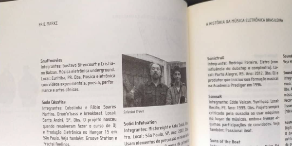
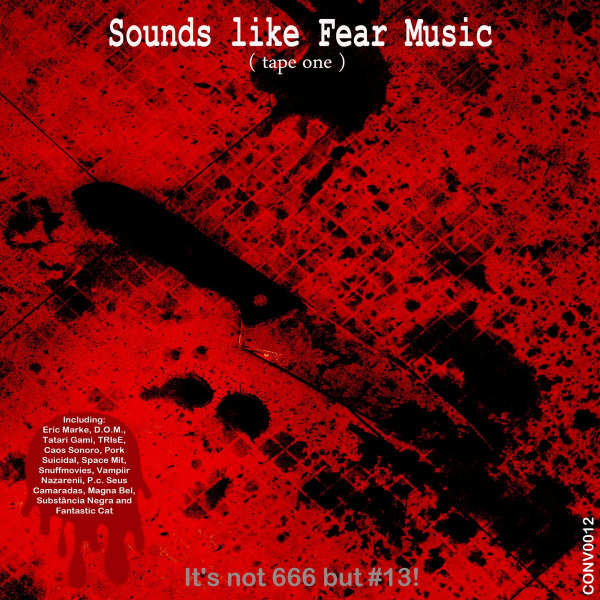

Projeto de vídeo e música eletrônica desenvolvido com o videomaker Cristiano Balzan. Uma dupla que fazia trilha, imagem e edição sem separar muito uma coisa da outra.
O projeto é citado no livro MEB — A História da Música Eletrônica Brasileira, de Eric Marke, como uma das primeiras bandas eletrônicas de terror do país. Em 2023, a faixa “Hollywwodland Puppet” saiu na coletânea Sounds Like Fear Music (Tape Two), da (Conves)cote Records.


Prêmio Lucky Strike Lab. Santo André Filme Festival · Festival do Livre Olhar · Festival Internacional de Cinema do Recife · Mostra Banco do Brasil (2003).
Prêmio da crítica no Festival MixBrasil. Santo André Filme Festival · Festival do Livre Olhar · Festival Internacional de Cinema do Recife · Mostra Banco do Brasil · Xperimento NY Film Festival, Nova York · Festival de Sydney Mardi Gras, Austrália. Trilha sonora original.
Prêmios de melhor edição e melhor direção, Festival do Livre Olhar, Porto Alegre. Trilha sonora original.